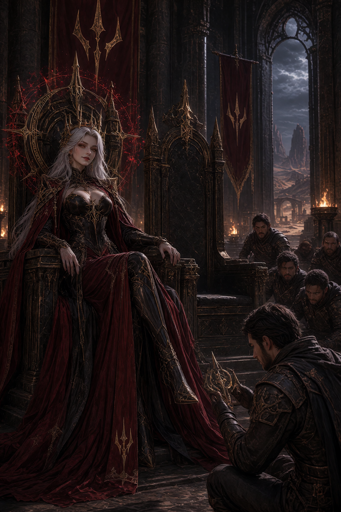

CHARACTER FILE / KLEOPATRA
The one who remembers
She carries the shared history Viko removed from himself. Her return makes memory relational, not just personal.
THE KING WHO CHOSE TO FORGET
Viko erased the King he used to be. Now fragments of that life are returning — and the Queen he chose to forget is waiting inside them.
01 / THE PREMISE
Kleopatra returns with a truth Viko cannot ignore: humanity may survive only if he becomes the King he deliberately erased.
This version turns that conflict into a system. You decide what Viko learns before you decide who he becomes.
02 / MEMORY RECONSTRUCTION
Recover any three fragments to decide Viko's fate. Recover all four to expose the choice he tried to erase.
03 / THE DECISION
RECONSTRUCT 3 MEMORIES TO CONTINUE
The answer is still hidden behind the missing pieces.
YOUR ENDING
04 / ARCHIVE
Finish the story to unlock your outcome record.

She carries the shared history Viko removed from himself. Her return makes memory relational, not just personal.
A man split between chosen identity and inherited responsibility.
05 / BUILD NOTES
The original hackathon build combined Studio-generated imagery and video with a VibeFlow choice experience. This expanded version adds state, exploration, branching outcomes, persistence, and a post-story archive.